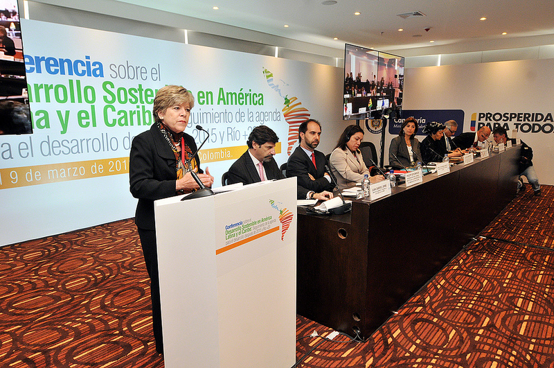
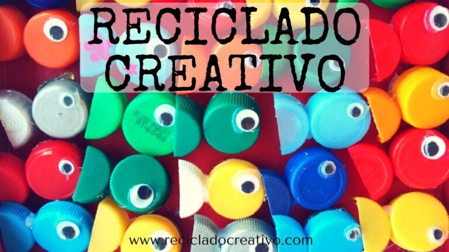
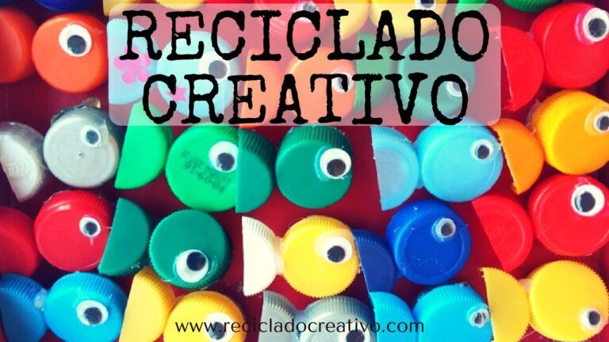
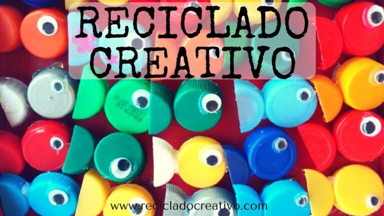
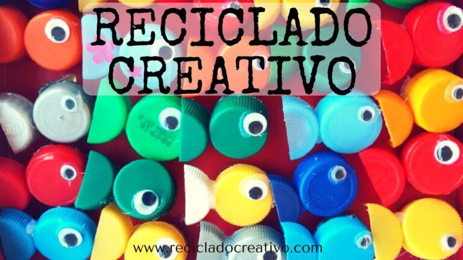

 



Ecoeventos es tu plataforma ideal para estar al día con los eventos más importantes de tu ciudad. Te ofrecemos un espacio donde podrás encontrar desde eventos culturales, musicales, deportivos hasta conferencias y más. ¡Únete a nosotros y no te pierdas los mejores eventos!
Fecha: 25 de febrero de 2025
Ubicación: Plaza Central
Ven a descubrir productos orgánicos y ecológicos locales. Una excelente oportunidad para apoyar el consumo responsable y conocer más sobre sostenibilidad.
Fecha: 10 de marzo de 2025
Ubicación: Centro Comunitario Verde
Aprende a reciclar y transformar materiales para crear productos útiles y creativos. ¡Dale una nueva vida a los objetos que ya no usas!
Fecha: 5 de abril de 2025
Ubicación: Parque Ecológico
Únete a esta actividad comunitaria y ayuda a mejorar el medio ambiente plantando árboles en nuestra ciudad. ¡Contribuye al bienestar de todos!